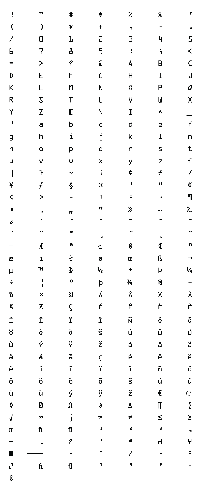

OCR A
Designed by American Type Founders in 1966
OCR stands for "optical character recognition," a technology that converts printed information into workable electronic data by scanning and identifying individual numbers and letters. This font was designed to be perfectly readable by computers; each character is shaped to reflect the precise format set by the United States Bureau of Standards. Originally, OCR-A was used mostly by banks, credit card companies, and other businesses that process large amounts of printed data by machine.
